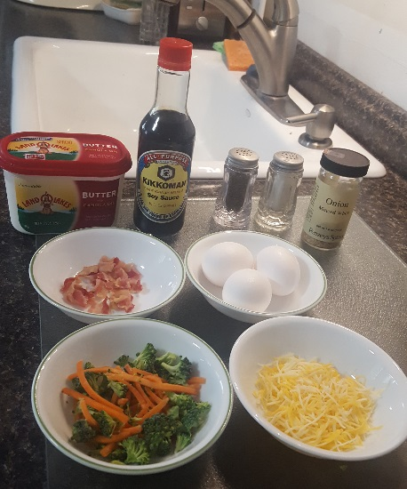

"Fridge" Omelette
Ingredients
- 3 eggs
- 1/4 cup of shredded cheddar
- 1/2 cup of chopped broccoli and carrots
- 2 pieces of bacon
- Salt and pepper
- Whatever else you have lying around that you want to throw in!

How to cook
- Beat eggs and add salt, pepper and any other seasoning you want to add.
- Chop up the bacon and cook on medium-low heat.
- Add veggies and butter until vibrant or translucent.
- Add beaten eggs and let rest until the bottom is no longer runny. Cover for 2 minutes.
- Add cheese to half and fold over. Add more cheese on top and let it cook for another minute or two.
- Serve while still hot!